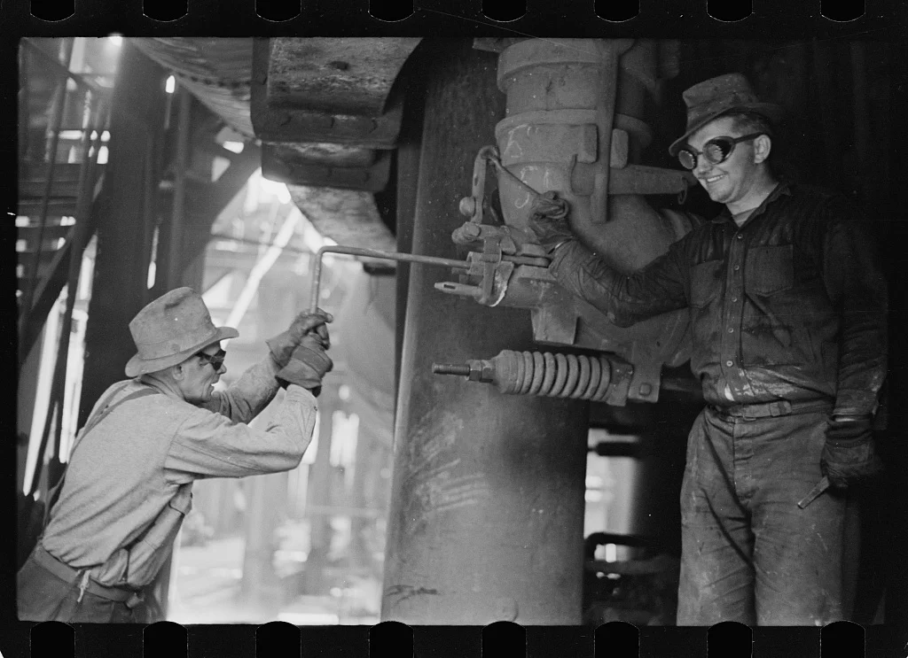
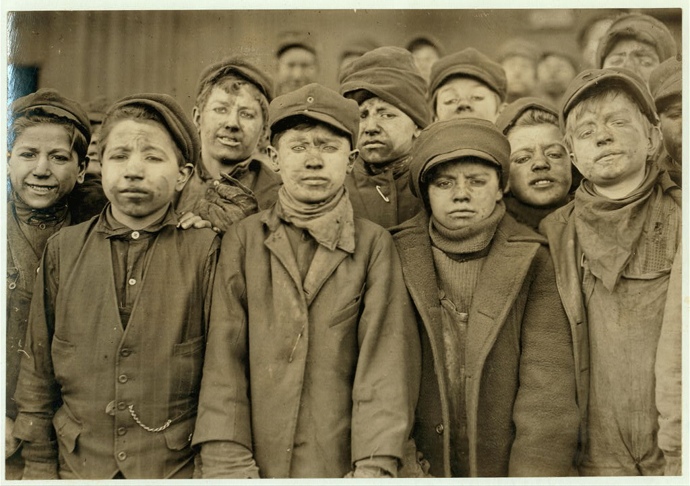
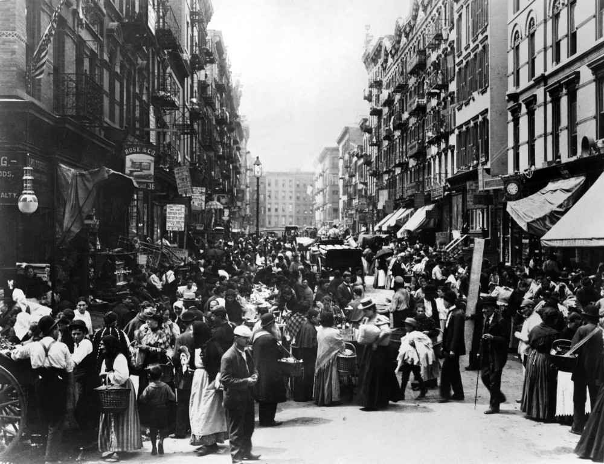
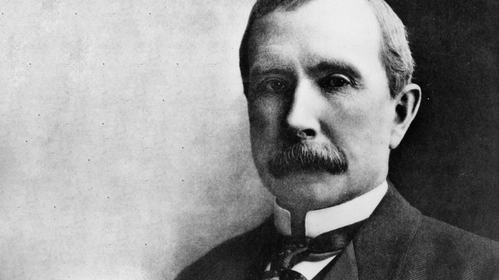
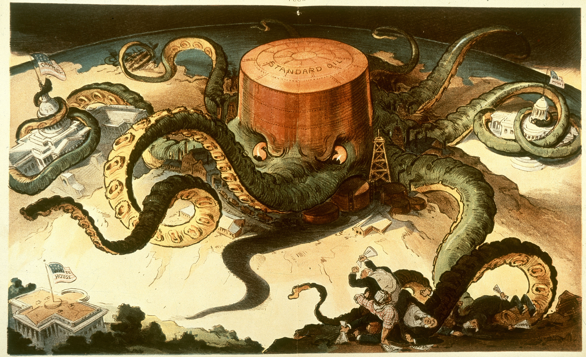
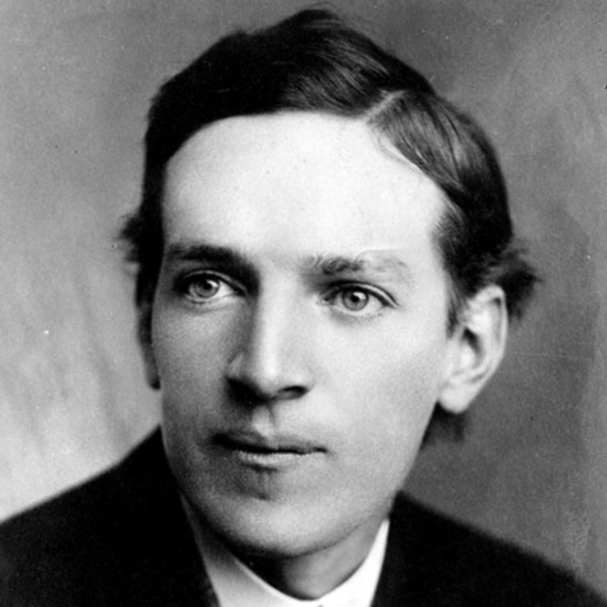
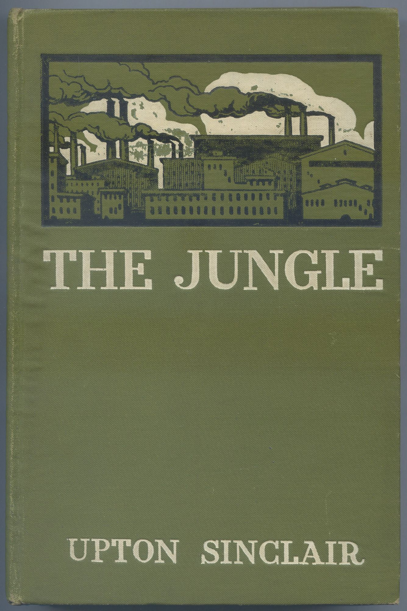
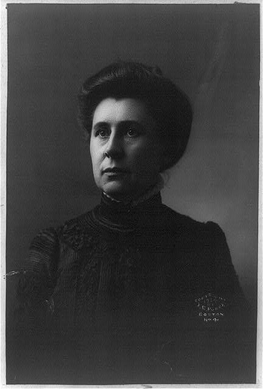
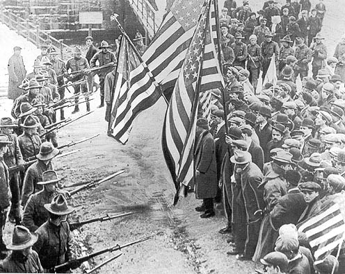
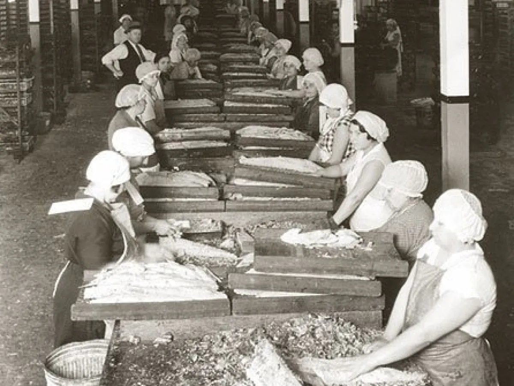

<!DOCTYPE html>

<html lang="en">
<head>
<meta charset="utf-8"/>
<meta content="width=device-width, initial-scale=1.0" name="viewport"/>
<title>SSU S1L02 ; INDUSTRIALIZATION AND IMMIGRATION</title>
<link href="https://fonts.googleapis.com/css2?family=Oswald:wght@500;600;700&amp;family=Playfair+Display:ital,wght@0,700;0,900;1,400;1,700&amp;family=Spectral:ital,wght@0,400;0,600;1,400;1,600&amp;display=swap" rel="stylesheet"/>
<style>
  /* ─── DESIGN TOKENS ; Industrial Era ─── */
  :root {
    --parchment:      #ede4d0;
    --parchment-mid:  #dfd5bc;
    --parchment-dark: #c4b898;
    --ink:            #18100a;
    --ink-mid:        #281c10;
    --steel:          #1e2830;
    --steel-mid:      #2c3840;
    --steel-light:    #3e4e58;
    --rust:           #8c3018;
    --rust-light:     #b04020;
    --gold:           #9a7010;
    --gold-light:     #c49028;
    --rule:           #6a4828;
    --vocab-color:    #b03030;
    --shadow:         rgba(24,16,10,0.32);
  }

  *, *::before, *::after { box-sizing: border-box; margin: 0; padding: 0; }
  html { scroll-behavior: smooth; }

  /* ─── BODY ; warm newsprint ground, industrial grit texture ─── */
  body {
    background: #7a6858;
    background-image: url("data:image/svg+xml,%3Csvg xmlns='http://www.w3.org/2000/svg' width='6' height='6'%3E%3Crect width='6' height='6' fill='%237a6858'/%3E%3Ccircle cx='1' cy='1' r='0.7' fill='%23685848' opacity='0.5'/%3E%3Ccircle cx='4' cy='4' r='0.7' fill='%23685848' opacity='0.5'/%3E%3C/svg%3E");
    font-family: 'Spectral', Georgia, serif;
    font-size: 18px;
    line-height: 1.85;
    color: var(--ink);
  }

  /* ─── PAGE WRAPPER ; same architecture as L01 ─── */
  .page-wrap {
    max-width: 820px;
    margin: 0 auto;
    background: var(--parchment);
    background-image:
      repeating-linear-gradient(
        0deg,
        transparent 0px, transparent 29px,
        rgba(106,72,40,0.06) 29px, rgba(106,72,40,0.06) 30px
      );
    box-shadow: 0 0 80px rgba(0,0,0,0.60), inset 0 0 120px rgba(154,112,16,0.05);
  }

  /* ════════════════════════════════
     HEADER ; steel and smoke, same structure as L01
  ════════════════════════════════ */
  .site-header {
    position: relative;
    overflow: hidden;
    min-height: 420px;
    display: flex;
    flex-direction: column;
    justify-content: flex-end;
    padding: 0;
  }

  .header-bg {
    position: absolute;
    inset: 0;
    background-image: url('images/S1/L02/S1L02_HeaderBg.jpg');
    background-size: cover;
    background-position: center center;
    opacity: 0.32;
    filter: sepia(50%) contrast(1.1);
  }

  .header-overlay {
    position: absolute;
    inset: 0;
    background: linear-gradient(
      to bottom,
      rgba(18,22,28,0.20) 0%,
      rgba(18,22,28,0.60) 55%,
      rgba(18,22,28,0.92) 100%
    );
  }

  .header-content {
    position: relative;
    z-index: 2;
    padding: 40px 50px 38px;
  }

  .course-label {
    font-family: 'Spectral', serif;
    font-size: 12px;
    letter-spacing: 0.45em;
    text-transform: uppercase;
    color: var(--gold-light);
    display: block;
    margin-bottom: 14px;
  }

  .page-title {
    font-family: 'Playfair Display', serif;
    font-size: 58px;
    font-weight: 900;
    color: var(--parchment);
    line-height: 1.05;
    margin-bottom: 6px;
    text-shadow: 2px 3px 14px rgba(0,0,0,0.75);
  }

  .page-dates {
    font-family: 'Spectral', serif;
    font-style: italic;
    font-size: 19px;
    color: var(--parchment-dark);
    margin-bottom: 28px;
    opacity: 0.9;
  }

  .eq-banner {
    background: rgba(18,22,28,0.88);
    border-left: 5px solid var(--gold-light);
    border-right: 5px solid var(--gold-light);
    padding: 18px 28px;
    display: inline-block;
    width: 100%;
  }

  .eq-label {
    font-size: 10px;
    letter-spacing: 0.4em;
    text-transform: uppercase;
    color: var(--gold-light);
    display: block;
    margin-bottom: 6px;
  }

  .eq-text {
    font-family: 'Playfair Display', serif;
    font-size: 21px;
    font-weight: 700;
    color: var(--parchment);
    line-height: 1.4;
  }

  /* ════════════════════════════════
     SECTION NAV BAR ; steel with rust underline accent
  ════════════════════════════════ */
  .section-nav {
    background: var(--steel);
    padding: 0 50px;
    display: flex;
    flex-wrap: wrap;
    gap: 2px;
    border-bottom: 3px solid var(--rust);
    position: sticky;
    top: 0;
    z-index: 100;
  }

  .section-nav a {
    display: inline-block;
    padding: 13px 16px;
    font-family: 'Spectral', serif;
    font-size: 13px;
    font-weight: 600;
    letter-spacing: 0.04em;
    color: var(--parchment-dark);
    text-decoration: none;
    text-transform: uppercase;
    border-bottom: 3px solid transparent;
    margin-bottom: -3px;
    transition: color 0.2s, border-color 0.2s;
  }

  .section-nav a:hover {
    color: var(--gold-light);
    border-bottom-color: var(--gold-light);
  }

  /* ════════════════════════════════
     BODY CONTENT ; identical architecture to L01
  ════════════════════════════════ */
  .content {
    padding: 0 50px;
  }

  /* ─── DIVIDER ; engraving rule, era-appropriate ─── */
  .divider {
    display: flex;
    align-items: center;
    gap: 18px;
    padding: 32px 50px;
  }
  .divider-line {
    flex: 1;
    height: 1px;
    background: var(--rule);
    opacity: 0.45;
  }
  .divider-ornament {
    font-family: 'Playfair Display', serif;
    font-size: 20px;
    color: var(--gold);
    opacity: 0.75;
  }

  /* ─── INTRO BLOCK ─── */
  .intro-block {
    font-family: 'Playfair Display', serif;
    font-style: italic;
    font-size: 21px;
    line-height: 1.7;
    color: var(--ink-mid);
    border-left: 4px solid var(--rust);
    padding: 4px 0 4px 24px;
    margin-bottom: 8px;
  }

  /* ─── SECTION ─── */
  .section {
    scroll-margin-top: 60px;
    padding-top: 8px;
  }

  /* ─── CHAPTER HEADING ; steel color instead of navy ─── */
  h2.ch {
    font-family: 'Playfair Display', serif;
    font-size: 34px;
    font-weight: 900;
    color: var(--steel);
    line-height: 1.15;
    margin-bottom: 20px;
    border-bottom: 2px solid var(--rust);
    padding-bottom: 12px;
  }

  p { margin-bottom: 20px; }
  p:last-child { margin-bottom: 0; }

  /* ─── VOCAB TOOLTIP ─── */
  .vocab {
    color: var(--vocab-color);
    text-decoration: underline dotted var(--vocab-color);
    cursor: help;
    position: relative;
    font-weight: 600;
  }
  .vocab .tip {
    display: none;
    position: absolute;
    bottom: 130%;
    left: 50%;
    transform: translateX(-50%);
    background: var(--steel);
    color: #fff;
    padding: 8px 14px;
    border-radius: 3px;
    font-size: 14px;
    line-height: 1.4;
    z-index: 50;
    font-style: normal;
    font-weight: 400;
    pointer-events: none;
    border-left: 3px solid var(--gold-light);
    max-width: 280px;
    white-space: normal;
    width: max-content;
  }
  .vocab:hover .tip,
  .vocab.active .tip { display: block; }

  .vocab-plain {
    color: var(--vocab-color);
    font-weight: 600;
  }

  /* ─── IMAGES ; same rules as L01 ─── */
  .img-full { margin: 32px 0; }
  .img-full img {
    width: 100%;
    display: block;
    border: 3px solid var(--rule);
    box-shadow: 5px 5px 22px var(--shadow);
  }

  .img-inset-left {
    float: left;
    width: 46%;
    margin: 6px 28px 18px 0;
  }
  .img-inset-left img {
    width: 100%;
    display: block;
    border: 3px solid var(--rule);
    box-shadow: 4px 4px 18px var(--shadow);
  }

  .img-inset-right {
    float: right;
    width: 44%;
    margin: 6px 0 18px 28px;
  }
  .img-inset-right img {
    width: 100%;
    display: block;
    border: 3px solid var(--rule);
    box-shadow: 4px 4px 18px var(--shadow);
  }

  .img-pair {
    display: grid;
    grid-template-columns: 1fr 1fr;
    gap: 16px;
    margin: 32px 0;
  }
  .img-pair img {
    width: 100%;
    display: block;
    border: 3px solid var(--rule);
    box-shadow: 4px 4px 18px var(--shadow);
  }

  .clearfix::after { content: ''; display: table; clear: both; }

  figcaption {
    font-family: 'Spectral', serif;
    font-style: italic;
    font-size: 14px;
    color: var(--ink-mid);
    margin-top: 8px;
    line-height: 1.4;
    opacity: 0.8;
  }
  .img-pair figcaption { font-size: 13px; }

  /* ─── PULLQUOTE ; steel with rust border, same structure as L01 ─── */
  .pullquote {
    background: var(--steel);
    color: var(--parchment);
    margin: 36px -10px;
    padding: 36px 46px 30px;
    border-left: 6px solid var(--rust);
    position: relative;
  }
  .pullquote::before {
    content: '\201C';
    font-family: 'Playfair Display', serif;
    font-size: 110px;
    color: var(--rust-light);
    position: absolute;
    top: -18px;
    left: 18px;
    line-height: 1;
    opacity: 0.25;
    pointer-events: none;
  }
  .pullquote-text {
    font-family: 'Playfair Display', serif;
    font-size: 22px;
    font-style: italic;
    line-height: 1.6;
    margin-bottom: 16px;
    position: relative;
  }
  .pullquote-attr {
    font-size: 13px;
    letter-spacing: 0.1em;
    text-transform: uppercase;
    color: var(--gold-light);
    margin-bottom: 14px;
  }
  .pullquote-narrator {
    font-size: 16px;
    color: #c8b898;
    border-top: 1px solid rgba(154,112,16,0.35);
    padding-top: 14px;
    font-style: italic;
    line-height: 1.6;
    margin-bottom: 16px;
  }
  .pullquote-questions {
    border-top: 1px solid rgba(154,112,16,0.35);
    padding-top: 16px;
  }
  .pullquote-questions p {
    font-size: 16px;
    color: #d8c8a8;
    margin-bottom: 10px;
    line-height: 1.55;
  }
  .pullquote-questions strong { color: var(--gold-light); }

  /* ─── SMALL PULLQUOTE ; secondary source, no questions ─── */
  .pullquote-small {
    background: var(--steel-mid);
    color: var(--parchment);
    margin: 28px 0;
    padding: 26px 34px;
    border-left: 5px solid var(--gold);
    position: relative;
  }
  .pullquote-small .pullquote-text {
    font-size: 19px;
    margin-bottom: 10px;
  }
  .pullquote-small .pullquote-narrator {
    font-size: 15px;
    margin-bottom: 0;
  }

  /* ─── FACT BOX ─── */
  .fact-box {
    background: var(--parchment-mid);
    border-left: 5px solid var(--steel);
    padding: 18px 24px;
    margin: 24px 0;
    font-size: 17px;
    line-height: 1.7;
    color: var(--ink);
  }
  .fact-box strong { color: var(--steel); }

  /* ─── HOW THIS STILL MATTERS ; same architecture as L01 ─── */
  #still-matters { scroll-margin-top: 60px; }

  .still-matters-block {
    background: var(--steel);
    background-image: linear-gradient(160deg, #1e2830 0%, #141c22 100%);
    color: var(--parchment);
    margin: 36px -10px;
    padding: 44px 50px;
    border-top: 4px solid var(--rust);
    border-bottom: 4px solid var(--rust);
  }

  .still-matters-block h2 {
    font-family: 'Playfair Display', serif;
    font-size: 30px;
    color: var(--gold-light);
    margin-bottom: 22px;
    border-bottom: none;
    padding-bottom: 0;
  }

  .still-now-headline {
    font-family: 'Playfair Display', serif;
    font-size: 25px;
    font-weight: 700;
    color: var(--parchment);
    margin-bottom: 26px;
    line-height: 1.35;
  }

  .news-list {
    list-style: none;
    margin-bottom: 28px;
    border-top: 1px solid rgba(154,112,16,0.3);
  }
  .news-list li {
    padding: 12px 0;
    border-bottom: 1px solid rgba(154,112,16,0.3);
    font-size: 17px;
    line-height: 1.5;
  }
  .news-list li a {
    color: var(--gold-light);
    text-decoration: underline;
    font-weight: 600;
    cursor: default;
  }

  .still-closing-q {
    font-family: 'Playfair Display', serif;
    font-size: 23px;
    font-style: italic;
    color: var(--parchment);
    margin-top: 28px;
    line-height: 1.5;
    border-left: 4px solid var(--rust);
    padding-left: 20px;
  }

  /* ─── LOCAL HISTORY CARD ; same architecture as L01 SD card ─── */
  #local-history { scroll-margin-top: 60px; }

  .local-card {
    background: var(--parchment-mid);
    border: 2px solid var(--rule);
    margin: 36px 0;
    padding: 28px 34px;
  }
  .local-card::before {
    content: '★  LOCAL HISTORY CONNECTION';
    display: block;
    font-size: 11px;
    letter-spacing: 0.35em;
    color: var(--rust);
    font-weight: 600;
    margin-bottom: 10px;
  }
  .local-card h3 {
    font-family: 'Playfair Display', serif;
    font-size: 22px;
    color: var(--ink);
    margin-bottom: 14px;
    line-height: 1.3;
  }

  /* ─── FOOTER ─── */
  .page-footer {
    background: var(--steel);
    color: var(--parchment-dark);
    text-align: center;
    padding: 18px;
    font-size: 12px;
    letter-spacing: 0.12em;
    text-transform: uppercase;
    border-top: 3px solid var(--rust);
  }


  /* ─── LEXILE TOGGLE + FLOATING TOC ─── */
  .para-simple { display: none; }
  body.simplified .para-standard { display: none; }
  body.simplified .para-simple { display: block; }

  #lexile-toggle {
    display: block;
    margin: 22px auto 26px;
    padding: 10px 24px;
    font-size: 13px;
    letter-spacing: 0.15em;
    text-transform: uppercase;
    cursor: pointer;
    border: 2px solid var(--rust);
    background: var(--parchment);
    color: var(--rust);
    font-family: 'Spectral', serif;
    font-weight: 600;
    transition: background 0.2s, color 0.2s;
  }
  #lexile-toggle:hover { background: var(--rust); color: var(--parchment); }

  .toc-sidebar {
    position: fixed;
    right: calc(50% - 570px);
    top: 50%;
    transform: translateY(-50%);
    width: 158px;
    padding: 14px 12px;
    z-index: 50;
    background: rgba(30,40,48,0.92);
    border-left: 2px solid rgba(196,144,40,0.55);
    box-shadow: 0 8px 30px rgba(0,0,0,0.35);
  }
  .toc-sidebar .toc-label {
    font-family: 'Oswald', sans-serif;
    font-size: 10px;
    letter-spacing: 0.35em;
    color: var(--gold-light);
    display: block;
    margin-bottom: 10px;
  }
  .toc-sidebar a {
    display: block;
    color: var(--parchment-dark);
    text-decoration: none;
    padding: 4px 0;
    font-family: 'Oswald', sans-serif;
    font-size: 11px;
    letter-spacing: 0.06em;
    line-height: 1.45;
  }
  .toc-sidebar a.active, .toc-sidebar a:hover { color: #fff; font-weight: 700; }
  @media (max-width: 1100px) { .toc-sidebar { display: none; } }

  /* ─── ENGAGEMENT BREAKS ─── */
  .brain-break {
    font-family: 'Oswald', sans-serif;
    margin: 44px -10px;
    padding: 36px 44px;
    position: relative;
    overflow: hidden;
  }
  .bb-label {
    display: block;
    font-family: 'Oswald', sans-serif;
    font-size: 11px;
    font-weight: 700;
    letter-spacing: 0.5em;
    text-transform: uppercase;
    margin-bottom: 14px;
  }
  .bb-text {
    font-family: 'Oswald', sans-serif;
    font-size: 23px;
    font-weight: 500;
    line-height: 1.55;
    margin: 0;
  }
  .dyk-break { background: #123f46; color: #f7f0dc; border-left: 7px solid #f2b544; }
  .dyk-break .bb-label { color: #f2b544; }
  .ff-break { background: #151515; color: #f7f0dc; padding: 38px 40px; margin: 0 -10px 44px; border-top: 4px solid #f2b544; border-bottom: 4px solid #f2b544; text-align: center; }
  .ff-break .bb-label { color: #f2b544; text-align: center; margin-bottom: 24px; }
  .ff-grid { display: flex; justify-content: space-around; flex-wrap: wrap; gap: 18px; }
  .ff-item { text-align: center; padding: 8px 10px; }
  .ff-number { display: block; font-family: 'Oswald', sans-serif; font-size: 56px; font-weight: 700; color: #f2b544; line-height: 1; margin-bottom: 8px; }
  .ff-desc { display: block; font-family: 'Oswald', sans-serif; font-size: 12px; letter-spacing: 0.16em; text-transform: uppercase; color: #efe4c8; max-width: 150px; margin: 0 auto; line-height: 1.35; }
  .as-break { background: #2b1f42; color: #f7f0dc; padding: 44px 50px; margin: 44px -10px; border-top: 4px solid #f2b544; border-bottom: 4px solid #f2b544; text-align: center; }
  .as-break .bb-label { color: #f2b544; }
  .as-image { max-width: 100%; display: block; margin: 0 auto 16px; border: 3px solid rgba(242,181,68,0.65); box-shadow: 0 8px 32px rgba(0,0,0,0.5); }
  .as-caption { font-family: 'Oswald', sans-serif; font-style: normal; font-size: 13px; color: #e9ddc4; line-height: 1.5; margin-bottom: 28px; display: block; }
  .as-question { font-family: 'Oswald', sans-serif; font-size: 25px; font-style: italic; font-weight: 500; color: #fff; line-height: 1.5; max-width: 620px; margin: 0 auto; }
  .tn-break { background: #102f38; color: #f7f0dc; padding: 36px 44px; margin: 30px 0 28px; border: 2px solid rgba(242,181,68,0.45); }
  .tn-break .bb-label { color: #f2b544; text-align: center; display: block; margin-bottom: 20px; }
  .tn-pair { display: grid; grid-template-columns: 1fr 1fr; gap: 18px; margin-bottom: 20px; }
  .tn-item { text-align: center; }
  .tn-era-label { display: block; font-family: 'Oswald', sans-serif; font-size: 11px; letter-spacing: 0.35em; text-transform: uppercase; color: #f2b544; margin-bottom: 10px; font-weight: 700; }
  .tn-item img { width: 100%; display: block; border: 2px solid rgba(242,181,68,0.5); }
  .tn-caption { font-family: 'Oswald', sans-serif; font-size: 12px; font-style: italic; color: #e9ddc4; margin-top: 8px; line-height: 1.4; }
  .tn-question { font-family: 'Oswald', sans-serif; font-size: 20px; font-style: italic; font-weight: 500; text-align: center; color: #fff; margin-top: 16px; line-height: 1.5; }
  .still-matters-block h2, .still-now-headline, .still-closing-q { color: #f7f0dc; }
  .still-matters-block h2 { font-size: 32px; }
  .still-now-headline { font-size: 27px; }
  @media (max-width: 600px) { .brain-break { padding: 28px 22px; margin: 36px 0; } .tn-pair { grid-template-columns: 1fr; } .as-break { padding: 32px 22px; } .as-question { font-size: 20px; } }

  /* ─── RESPONSIVE ─── */
  @media (max-width: 600px) {
    .content { padding: 0 22px; }
    .page-title { font-size: 38px; }
    .header-content { padding: 30px 22px 28px; }
    .section-nav { padding: 0 10px; }
    .section-nav a { font-size: 11px; padding: 10px 9px; }
    .img-inset-left, .img-inset-right { float: none; width: 100%; margin: 0 0 18px 0; }
    .img-pair { grid-template-columns: 1fr; }
    .pullquote, .still-matters-block { margin: 28px 0; padding: 28px 22px; }
  }
</style>
</head>
<body>
<div class="page-wrap">
<!-- ════ HEADER ════ -->
<header class="site-header">
<!--
    FILENAME: S1L02_HeaderBg.jpg
    PLACE IN: images/S1/L02/
    FIND: Carnegie Steel Company blast furnaces, Pittsburgh, Pennsylvania, 1890s ; wide panoramic view showing furnaces, smoke stacks, and scale of industrial production
    SEARCH: Wikimedia Commons ; "Carnegie Steel Company Pittsburgh blast furnaces 1890s"
    LINK (suggested): https://commons.wikimedia.org/wiki/File:Carnegie_Steel_Company_blast_furnaces_in_Pittsburgh_Pennsylvania_1890s.jpg
  -->
<div class="header-bg"></div>
<div class="header-overlay"></div>
<div class="header-content">
<span class="course-label">US HISTORY ; SEMESTER 1, LESSON 02</span>
<h1 class="page-title">INDUSTRIALIZATION<br/>AND IMMIGRATION</h1>
<p class="page-dates">1880 – 1920</p>
<div class="eq-banner">
<span class="eq-label">ESSENTIAL QUESTION</span>
<div class="eq-text">How did industrialization transform who Americans were, where they lived, and what they could demand?</div>
</div>
</div>
</header>
<!-- ════ NAV BAR ════ -->
<nav class="section-nav">
<a href="#factories">THE FACTORIES</a>
<a href="#immigration">THE IMMIGRANTS</a>
<a href="#trusts">TRUSTS AND POWER</a>
<a href="#reformers">THE REFORMERS</a>
<a href="#still-matters">STILL MATTERS TODAY</a>
<a href="#local-history">LOCAL HISTORY</a>
</nav><button id="lexile-toggle">SIMPLIFY TEXT</button>
<aside aria-label="On this page" class="toc-sidebar"><span class="toc-label">ON THIS PAGE</span><a href="#factories">THE FACTORIES</a><a href="#immigration">THE IMMIGRANTS</a><a href="#trusts">TRUSTS AND POWER</a><a href="#reformers">THE REFORMERS</a><a href="#still-matters">HOW THIS STILL MATTERS TODAY</a><a href="#local-history">LOCAL HISTORY</a></aside>

<!-- ════ INTRO ════ -->
<div class="divider"><div class="divider-line"></div><div class="divider-ornament">❧</div><div class="divider-line"></div></div>
<div class="content">
<p class="intro-block para-standard">Chicago, 1906. A young Lithuanian immigrant named Jurgis arrives at the meatpacking plant before sunrise. The smell hits him before he walks through the door. He will stand in blood and animal waste for twelve hours today. He will earn two dollars. He has no idea that a writer named Upton Sinclair has been watching him for weeks.</p><p class="para-simple">Chicago, 1906.  young Lithuanian immigrant named Jurgis arrives at the meatpacking plant before sunrise. he smell hits him before he walks through the door. e will stand in blood and animal waste for twelve hours today. e will earn two dollars. e has no idea that a writer named Upton Sinclair has been watching him for weeks.</p>
<p class="para-standard">Between 1880 and 1920, the United States became the most powerful industrial nation on earth. Factories multiplied. Cities exploded in size. Millions of people arrived from Europe and Asia looking for a better life. And a very small number of men became so wealthy they could buy politicians, crush all competition, and rewrite the rules of the economy. The question the country had to answer was simple: who does all of this power actually belong to?</p><p class="para-simple">Between 1880 and 1920, the United States became the most powerful industrial nation on earth. actories multiplied. ities exploded in size. illions of people arrived from Europe and Asia looking for a better life. nd a very small number of men became so wealthy they could buy politicians, crush all competition, and rewrite the rules of the economy. he question the country had to answer was simple: who does all of this power actually belong to?</p>
</div>
<!-- ════ SECTION 1 ; THE FACTORIES ════ -->
<div class="divider"><div class="divider-line"></div><div class="divider-ornament">✦</div><div class="divider-line"></div></div>
<div class="content section" id="factories">
<h2 class="ch">CHAPTER 1 ; THE FACTORIES CHANGE EVERYTHING</h2>
<div class="clearfix">
<!--
      FILENAME: S1L02_SteelWorkers.jpg
      PLACE IN: images/S1/L02/
      FIND: Steel workers at a blast furnace or rolling mill, Pittsburgh, circa 1900-1910 ; showing the physical danger and scale of industrial labor
      SEARCH: Wikimedia Commons ; "steel workers Pittsburgh 1900" or "Bethlehem Steel workers furnace"
      LINK (suggested): https://commons.wikimedia.org/wiki/File:Steelworkers_at_the_blast_furnace.jpg
    -->
<figure class="img-inset-right">

<figcaption>Steel workers at a blast furnace, Pittsburgh, Pennsylvania, c. 1905. Temperatures inside reached 3,000 degrees. | Library of Congress</figcaption>
</figure>
<p class="para-standard"><span class="vocab">Industrialization<span class="tip">The shift from a farming economy to one powered by factories, machines, and mass production.</span></span> did not happen slowly. In the decades after the Civil War, American factories began producing things faster, cheaper, and in larger quantities than any country in history. Steel mills, textile factories, coal mines, and meatpacking plants spread across the Northeast and Midwest. By 1900, the United States produced more steel than Britain and Germany combined.</p><p class="para-simple">Factories and machines The shift from a farming economy to one powered by factories, machines, and mass production. did not happen slowly. n the decades after the Civil War, American factories began producing things faster, cheaper, and in larger quantities than any country in history. teel mills, textile factories, coal mines, and meatpacking plants spread across the Northeast and Midwest. y 1900, the United States produced more steel than Britain and Germany combined.</p>
<p class="para-standard">The railroads made it all possible. A nationwide railroad network connected factories to markets, farms to cities, and raw materials to the workers who processed them. By 1890, more than 160,000 miles of railroad track crossed the country. Goods could move from Chicago to New York in days instead of weeks. A national economy was born from that speed.</p><p class="para-simple">The railroads made it all possible.  nationwide railroad network connected factories to markets, farms to cities, and raw materials to the workers who processed them. y 1890, more than 160,000 miles of railroad track crossed the country. oods could move from Chicago to New York in days instead of weeks.  countrywide economy was born from that speed.</p>
<p class="para-standard">But the factories that built American wealth ran on human cost. Workers labored 10 to 14 hours a day, six days a week, for wages that barely covered rent and food. There were no safety rules. Machines had no guards. Injuries were common and usually meant losing your job. Children as young as eight worked in coal mines and textile mills because families could not survive without the extra income. If you complained, you were replaced before sundown.</p><p class="para-simple">But the factories that built American wealth ran on human cost. orkers labored 10 to 14 hours a day, six days a week, for wages that barely covered rent and food. here were no safety rules. achines had no guards. njuries were common and usually meant losing your job. hildren as young as eight worked in coal mines and textile mills because families could not survive without the extra income. f you complained, you were replaced before sundown.</p>
<p class="para-standard">The men who owned the factories lived in a different world entirely. Industrialists like Andrew Carnegie and John D. Rockefeller built personal fortunes larger than the budgets of most countries. They were celebrated as self-made men who proved that hard work led to success. Workers who were injured or paid starvation wages told a different story about the same system.</p><p class="para-simple">The men who owned the factories lived in a different world entirely. ndustrialists like Andrew Carnegie and John D. ockefeller built personal fortunes larger than the budgets of most countries. hey were celebrated as self-made men who proved that hard work led to success. orkers who were injured or paid starvation wages told a different story about the same system.</p>
</div>
<!--
    FILENAME: S1L02_ChildLabor.jpg
    PLACE IN: images/S1/L02/
    FIND: Lewis Hine photograph of child laborers ; breaker boys sorting coal in a Pennsylvania mine, circa 1908-1912. The most iconic images of child labor in American history.
    SEARCH: Wikimedia Commons ; "Lewis Hine breaker boys coal mine 1911"
    LINK (suggested): https://commons.wikimedia.org/wiki/File:Breaker_boys_in_Hughestown_Borough_Pa._Colliery.jpg
  -->
<figure class="img-full">

<figcaption>Breaker boys sorting coal at a Pennsylvania mine, photographed by Lewis Hine for the National Child Labor Committee, 1911. Most were between 8 and 12 years old. | Library of Congress</figcaption>
</figure>
</div>
<div class="brain-break dyk-break">
<span class="bb-label">DID YOU KNOW</span>
<p class="bb-text">Lewis Hine sometimes pretended to be a Bible salesman, a postcard seller, or an industrial photographer so he could get inside factories and photograph children at work.</p>
</div>
<div class="brain-break ff-break">
<span class="bb-label">FAST FACTS</span>
<div class="ff-grid">
<div class="ff-item"><span class="ff-number">24M</span><span class="ff-desc">IMMIGRANTS ARRIVED 1880–1920</span></div>
<div class="ff-item"><span class="ff-number">12M</span><span class="ff-desc">PASSED THROUGH ELLIS ISLAND</span></div>
<div class="ff-item"><span class="ff-number">2%</span><span class="ff-desc">TURNED AWAY AT ELLIS ISLAND</span></div>
<div class="ff-item"><span class="ff-number">160K</span><span class="ff-desc">MILES OF RAILROAD TRACK</span></div>
</div>
</div>

<!-- ════ SECTION 2 ; IMMIGRATION ════ -->
<div class="divider"><div class="divider-line"></div><div class="divider-ornament">❧</div><div class="divider-line"></div></div>
<div class="content section" id="immigration">
<h2 class="ch">CHAPTER 2 ; THE IMMIGRANTS ARRIVE</h2>
<div class="clearfix">
<!--
      FILENAME: S1L02_EllisIsland.jpg
      PLACE IN: images/S1/L02/
      FIND: The Registry Room (Great Hall) at Ellis Island filled with immigrants waiting to be processed, circa 1900-1912
      SEARCH: Wikimedia Commons ; "Ellis Island Registry Room immigrants 1902"
      LINK (suggested): https://commons.wikimedia.org/wiki/File:Ellis_Island_immigrants_1902.jpg
    -->
<figure class="img-inset-left">

<figcaption>Immigrants waiting in the Registry Room at Ellis Island, New York, c. 1902. Between 1892 and 1954, more than 12 million people entered the U.S. through Ellis Island. | Library of Congress / Wikimedia Commons</figcaption>
</figure>
<p class="para-standard">The factories needed workers. Between 1880 and 1920, nearly 24 million immigrants arrived in the United States to fill them. This was the largest wave of immigration in American history. Most came from Southern and Eastern Europe: Italy, Poland, Russia, Hungary, Greece. Hundreds of thousands came from China, Japan, and Mexico. They came because of poverty, famine, religious persecution, and war. They came because someone from their village had written a letter home that said: there is work in America.</p><p class="para-simple">The factories needed workers. etween 1880 and 1920, nearly 24 million people moving to the United States arrived in the United States to fill them. his was the largest wave of immigration in American history. ost came from Southern and Eastern Europe: Italy, Poland, Russia, Hungary, Greece. undreds of thousands came from China, Japan, and Mexico. hey came because of poverty, famine, religious persecution, and war. hey came because someone from their village had written a letter home that said: there is work in America.</p>
<p class="para-standard">Most immigrants arrived at Ellis Island in New York Harbor. They were examined by doctors, questioned by inspectors, and sometimes given names that English-speaking officials could pronounce more easily. About 2 percent were turned away. The other 98 percent were sent into a country that was not always glad to see them. Signs reading "No Irish Need Apply" and "No Italians" hung in store windows and outside factory doors.</p><p class="para-simple">Most people moving to the United States arrived at Ellis Island in New York Harbor. hey were examined by doctors, questioned by inspectors, and sometimes given names that English-speaking officials could pronounce more easily. bout 2 percent were turned away. he other 98 percent were sent into a country that was not always glad to see them. igns reading "No Irish Need Apply" and "No Italians" hung in store windows and outside factory doors.</p>
<p class="para-standard">Those who found work often settled in neighborhoods packed with people from the same country. Polish immigrants clustered in Chicago. Italian immigrants built communities in New York's Lower East Side. Chinese immigrants created Chinatowns in San Francisco and Los Angeles. These neighborhoods had their own newspapers, churches, and grocery stores. They were a way of surviving in a country that had not yet decided whether to accept you.</p><p class="para-simple">Those who found work often settled in neighborhoods packed with people from the same country. olish people moving to the United States clustered in Chicago. talian people moving to the United States built communities in New York's Lower East Side. hinese people moving to the United States created Chinatowns in San Francisco and Los Angeles. hese neighborhoods had their own newspapers, churches, and grocery stores. hey were a way of surviving in a country that had not yet decided whether to accept you.</p>
<p class="para-standard">The government and many native-born Americans responded with a movement called <span class="vocab">Americanization<span class="tip">A government and social movement that pressured immigrants to give up their languages and cultures and adopt English-speaking American customs as quickly as possible.</span></span>. Immigrant children were placed in public schools where speaking their home language was forbidden. Settlement houses run by reformers like Jane Addams taught English, job skills, and American customs. The message was consistent: become American as fast as possible, and leave everything else behind.</p><p class="para-simple">The government and many native-born Americans responded with a movement called Americanization A government and social movement that pressured people moving to the United States to give up their languages and cultures and adopt English-speaking American customs as quickly as possible. . mmigrant children were placed in public schools where speaking their home language was forbidden. ettlement houses run by people who pushed for change like Jane Addams taught English, job skills, and American customs. he message was consistent: become American as fast as possible, and leave everything else behind.</p>
</div>
<!--
    FILENAME: S1L02_ImmigrantNeighborhood.jpg
    PLACE IN: images/S1/L02/
    FIND: Hester Street, New York City Lower East Side, circa 1898-1905 ; the famous crowded street market photograph showing density and energy of immigrant neighborhood life
    SEARCH: Wikimedia Commons ; "Hester Street New York 1898"
    LINK (suggested): https://commons.wikimedia.org/wiki/File:Hester_Street_1898.jpg
  -->
<figure class="img-full">

<figcaption>Hester Street on Manhattan's Lower East Side, 1898. The neighborhood was home to hundreds of thousands of Jewish, Italian, and Eastern European immigrants. | Library of Congress</figcaption>
</figure>
<!-- Small secondary pullquote ; Melting Pot -->
<div class="pullquote-small">
<div class="pullquote-text">"America is God's crucible, the great melting pot where all the races of Europe are melting and reforming."</div>
<div class="pullquote-attr">; Israel Zangwill, playwright, <em>The Melting Pot</em>, 1908</div>
<p class="pullquote-narrator">Zangwill's play gave America its most famous metaphor for immigration; but immigrants themselves often disagreed about whether "melting" was something to celebrate or something to mourn.</p>
</div>
</div>
<!-- ════ SECTION 3 ; TRUSTS AND POWER ════ -->
<div class="divider"><div class="divider-line"></div><div class="divider-ornament">✦</div><div class="divider-line"></div></div>
<div class="content section" id="trusts">
<h2 class="ch">CHAPTER 3 ; TRUSTS, MONOPOLIES, AND THE MEN WHO OWNED EVERYTHING</h2>
<div class="clearfix">
<!--
      FILENAME: S1L02_Rockefeller.jpg
      PLACE IN: images/S1/L02/
      FIND: Portrait of John D. Rockefeller, founder of Standard Oil, circa 1885-1890 ; the most widely reproduced press photograph
      SEARCH: Wikimedia Commons ; "John D. Rockefeller portrait 1885"
      LINK (suggested): https://commons.wikimedia.org/wiki/File:John_D._Rockefeller_1885.jpg
    -->
<figure class="img-inset-right">

<figcaption>John D. Rockefeller, founder of Standard Oil, c. 1885. At his peak he controlled 90 percent of all oil refining in the United States. | Wikimedia Commons</figcaption>
</figure>
<p class="para-standard">While immigrants scraped together wages, a small group of industrialists was building something that had never existed before: corporations so large they controlled entire industries. John D. Rockefeller's Standard Oil Company refined 90 percent of all American oil by 1880. Andrew Carnegie controlled most of American steel production. J.P. Morgan owned banks, railroads, and steel companies at the same time. These men did not just compete in the market. They eliminated competition entirely.</p><p class="para-simple">While people moving to the United States scraped together wages, a small group of industrialists was building something that had never existed before: large companies so large they controlled entire industries. ohn D. ockefeller's Standard Oil Company refined 90 percent of all American oil by 1880. ndrew Carnegie controlled most of American steel production. .P. organ owned banks, railroads, and steel companies at the same time. hese men did not just compete in the market. hey eliminated competition entirely.</p>
<p class="para-standard">The tool they used was called a <span class="vocab">trust<span class="tip">A business arrangement where competing companies combine under one leadership, removing competition and letting them control prices across an entire industry.</span></span>. A trust worked like this: instead of companies competing for customers, they quietly agreed to combine under a single management structure. They could then set whatever prices they wanted, pay workers whatever they chose, and destroy any smaller competitor who tried to enter the market. A trust was legal, efficient, and devastating for anyone outside of it.</p><p class="para-simple">The tool they used was called a business group A business arrangement where competing companies combine under one leadership, removing competition and letting them control prices across an entire industry. .  business group worked like this: instead of companies competing for customers, they quietly agreed to combine under a single management structure. hey could then set whatever prices they wanted, pay workers whatever they chose, and destroy any smaller competitor who tried to enter the market.  business group was legal, efficient, and devastating for anyone outside of it.</p>
<p class="para-standard">When a trust grew large enough to control an entire industry with no real competition left, it became a <span class="vocab">monopoly<span class="tip">When one company controls so much of an industry that no real competition exists, giving it total power over prices and supply.</span></span>. Standard Oil was a monopoly. The railroad networks that carried goods across the country were often monopolies in their regions. If you needed to ship goods in the Midwest and one railroad owned all the tracks, you paid whatever that railroad charged. You had no other choice.</p><p class="para-simple">When a business group grew large enough to control an entire industry with no real competition left, it became a company with too much control When one company controls so much of an industry that no real competition exists, giving it total power over prices and supply. . tandard Oil was a company with too much control. he railroad networks that carried goods across the country were often monopolies in their regions. f you needed to ship goods in the Midwest and one railroad owned all the tracks, you paid whatever that railroad charged. ou had no other choice.</p>
<p class="para-standard">Political cartoonists of the era drew Standard Oil as a giant octopus with tentacles wrapped around Congress, state governments, and the courts. They were not exaggerating by much. Rockefeller and other industrialists paid bribes to politicians, funded friendly campaigns, and used their lawyers to tie up government regulation for decades. Students who follow debates today about tech giants like Amazon or Google controlling entire markets are watching the exact same argument with different names.</p><p class="para-simple">Political cartoonists of the era drew Standard Oil as a giant octopus with tentacles wrapped around Congress, state governments, and the courts. hey were not exaggerating by much. ockefeller and other industrialists paid bribes to politicians, funded friendly campaigns, and used their lawyers to tie up government regulation for decades. tudents who follow debates today about tech giants like Amazon or Google controlling entire markets are watching the exact same argument with different names.</p>
</div>
<div class="fact-box">
<strong>By the numbers:</strong> In 1890, the wealthiest 1 percent of Americans owned more wealth than the bottom 99 percent combined. The gap between the richest industrialists and the average factory worker was larger than at any other point in U.S. history before or since.
  </div>
</div>
<div class="brain-break as-break">
<span class="bb-label">ART SPOTLIGHT</span>
<figure>
<!--
      FILENAME: S1L02_ArtSpotlight_StandardOilOctopus.jpg
      PLACE IN: images/S1/L02/
      FIND: Political cartoon showing Standard Oil as an octopus with tentacles reaching into Congress, statehouses, and industries, early 1900s.
      SEARCH: Wikimedia Commons Standard Oil octopus political cartoon 1904
      LINK: https://commons.wikimedia.org/wiki/File:Standard_oil_octopus_loc_color.jpg (suggested, not guaranteed)
    -->

<figcaption class="as-caption">Standard Oil political cartoon, early 1900s. Source: Library of Congress / Wikimedia Commons.</figcaption>
</figure>
<p class="as-question">If you saw this cartoon in a newspaper, which tentacle would make you stop and look twice?</p>
</div>

<!-- ════ SECTION 4 ; THE REFORMERS ════ -->
<div class="divider"><div class="divider-line"></div><div class="divider-ornament">❧</div><div class="divider-line"></div></div>
<div class="content section" id="reformers">
<h2 class="ch">CHAPTER 4 ; THE REFORMERS FIGHT BACK</h2>
<div class="clearfix">
<!--
      FILENAME: S1L02_UptonSinclair.jpg
      PLACE IN: images/S1/L02/
      FIND: Portrait of Upton Sinclair, author of The Jungle, circa 1905-1915 ; a press photograph showing him as a young man
      SEARCH: Wikimedia Commons ; "Upton Sinclair portrait 1906"
      LINK (suggested): https://commons.wikimedia.org/wiki/File:Upton_Sinclair,_1906.jpg
    -->
<figure class="img-inset-left">

<figcaption>Upton Sinclair, author of <em>The Jungle</em>, photographed in 1906. | Wikimedia Commons</figcaption>
</figure>
<p class="para-standard">By 1900, Americans were angry. The gap between the wealthy and everyone else was impossible to ignore. Journalists began investigating the companies and politicians that ordinary people had no power to challenge on their own. These journalists had a name: <span class="vocab">muckraker<span class="tip">A journalist in the early 1900s who investigated and publicly exposed corruption, dangerous conditions, and abuse of power in business and government.</span></span>. President Theodore Roosevelt gave them the name, borrowing it from a character in a novel who raked muck instead of looking up at the stars. Roosevelt meant it as a mild insult. The journalists wore it as a badge of honor.</p><p class="para-simple">By 1900, Americans were angry. he gap between the wealthy and everyone else was impossible to ignore. ournalists began investigating the companies and politicians that ordinary people had no power to challenge on their own. hese journalists had a name: investigative journalist A journalist in the early 1900s who investigated and publicly exposed corruption, dangerous conditions, and abuse of power in business and government. . resident Theodore Roosevelt gave them the name, borrowing it from a character in a novel who raked muck instead of looking up at the stars. oosevelt meant it as a mild insult. he journalists wore it as a badge of honor.</p>
<p class="para-standard">The most famous muckraker was Upton Sinclair. In 1906, he published <em>The Jungle</em>, a novel that followed a Lithuanian immigrant family through the Chicago meatpacking industry. Sinclair spent seven weeks working undercover in the stockyards. He wrote about meat processed in rooms crawling with rats. He wrote about workers who fell into rendering vats and were processed along with the animal fat. He wrote about tuberculosis-infected meat that was scraped, re-seasoned, and sold as sausage.</p><p class="para-simple">The most famous investigative journalist was Upton Sinclair. n 1906, he published The Jungle , a novel that followed a Lithuanian immigrant family through the Chicago meatpacking industry. inclair spent seven weeks working undercover in the stockyards. e wrote about meat processed in rooms crawling with rats. e wrote about workers who fell into rendering vats and were processed along with the animal fat. e wrote about tuberculosis-infected meat that was scraped, re-seasoned, and sold as sausage.</p>
<p class="para-standard">Sinclair meant to make readers angry about the treatment of workers. Instead, he made them afraid of their food. "I aimed at the public's heart," he later wrote, "and by accident I hit it in the stomach." Public outrage was immediate and enormous. Within months, Congress passed the Pure Food and Drug Act and the Meat Inspection Act of 1906, creating the first federal system for inspecting what Americans ate.</p><p class="para-simple">Sinclair meant to make readers angry about the treatment of workers. nstead, he made them afraid of their food. "I aimed at the public's heart," he later wrote, "and by accident I hit it in the stomach." Public outrage was immediate and enormous. ithin months, Congress passed the Pure Food and Drug Act and the Meat Inspection Act of 1906, creating the first federal system for inspecting what Americans ate.</p>
<p class="para-standard">Ida Tarbell was equally powerful. She spent years investigating Standard Oil, publishing a 19-part series in <em>McClure's Magazine</em> between 1902 and 1904. Her reporting was carefully documented and impossible to dismiss. In 1911, the Supreme Court ordered Standard Oil broken into 34 separate companies. A journalist with a typewriter and public records had dismantled the largest corporation in American history.</p><p class="para-simple">Ida Tarbell was equally powerful. he spent years investigating Standard Oil, publishing a 19-part series in McClure's Magazine between 1902 and 1904. er reporting was carefully documented and impossible to dismiss. n 1911, the Supreme Court ordered Standard Oil broken into 34 separate companies.  journalist with a typewriter and public records had dismantled the largest corporation in American history.</p>
</div>
<!--
    FILENAME: S1L02_TheJungleCover.jpg / S1L02_IdaTarbell.jpg ; PAIRED
  -->
<div class="img-pair">
<!--
      FILENAME: S1L02_TheJungleCover.jpg
      PLACE IN: images/S1/L02/
      FIND: First edition cover of The Jungle by Upton Sinclair, published 1906 by Doubleday, Page and Company
      SEARCH: Wikimedia Commons ; "The Jungle Upton Sinclair first edition cover 1906"
      LINK (suggested): https://commons.wikimedia.org/wiki/File:The_Jungle_book_cover.jpg
    -->
<figure>

<figcaption>First edition of <em>The Jungle</em>, 1906. The book sold 150,000 copies in its first year. | Wikimedia Commons</figcaption>
</figure>
<!--
      FILENAME: S1L02_IdaTarbell.jpg
      PLACE IN: images/S1/L02/
      FIND: Portrait of Ida Tarbell, investigative journalist, circa 1904 ; her investigation of Standard Oil led directly to the company's court-ordered breakup
      SEARCH: Wikimedia Commons ; "Ida Tarbell portrait 1904"
      LINK (suggested): https://commons.wikimedia.org/wiki/File:Ida_Tarbell_1904.jpg
    -->
<figure>

<figcaption>Ida Tarbell, whose 19-part investigation of Standard Oil led to the company's breakup in 1911. | Wikimedia Commons</figcaption>
</figure>
</div>
</div>
<!-- ════ PRIMARY SOURCE ; THE JUNGLE ════ -->
<div class="content">
<div class="pullquote">
<div class="pullquote-text">
      "There was never the least attention paid to what was cut up for sausage; there would come all the way back from Europe old sausage that had been rejected, and that was moldy and white; it would be doused with borax and glycerine, and dumped into the hoppers, and made over again for home consumption."
    </div>
<div class="pullquote-attr">; Upton Sinclair, <em>The Jungle</em>, 1906</div>
<div class="pullquote-narrator">Sinclair wrote this based on seven weeks undercover inside Chicago's meatpacking plants; this single passage triggered a national crisis and forced Congress to create the first federal food safety laws in American history.</div>
<div class="pullquote-questions">
<p class="para-standard"><strong>Question 1:</strong> What is Sinclair describing in this passage? What was actually happening to the food that Americans were buying and eating?</p><p class="para-simple">Question 1: What is Sinclair describing in this passage? What was actually happening to the food that Americans were buying and eating?</p>
<p class="para-standard"><strong>Question 2:</strong> Sinclair is called a <span class="vocab-plain">muckraker</span>. Based on this passage and what you read in Chapter 4, explain in your own words why that word fits what he was doing.</p><p class="para-simple">Question 2: Sinclair is called a investigative journalist . ased on this passage and what you read in Chapter 4, explain in your own words why that word fits what he was doing.</p>
</div>
</div>
</div>
<!-- ════ HOW THIS STILL MATTERS TODAY ════ -->
<div class="content" id="still-matters">
<div class="still-matters-block">
<h2>HOW THIS STILL MATTERS TODAY</h2>
<p class="still-now-headline para-standard">The same fights over corporate power, immigrant workers, and food safety that exploded in 1906 are still being argued in Congress, in courts, and in the streets right now.</p>
<div class="brain-break tn-break">
<span class="bb-label">THEN AND NOW</span>
<div class="tn-pair">
<div class="tn-item">
<span class="tn-era-label">1912</span>
<!--
        FILENAME: S1L02_Then_LawrenceTextileStrike.jpg
        PLACE IN: images/S1/L02/
        FIND: Lawrence textile strike workers or child strikers, Massachusetts, 1912, public domain photograph.
        SEARCH: Wikimedia Commons Lawrence textile strike 1912 children workers
        LINK: https://commons.wikimedia.org/wiki/Category:1912_Lawrence_textile_strike (suggested, not guaranteed)
      -->

<p class="tn-caption">Textile workers and families during the Lawrence strike, 1912.</p>
</div>
<div class="tn-item">
<span class="tn-era-label">TODAY</span>
<!--
        FILENAME: S1L02_Now_WarehouseWorkersRally.jpg
        PLACE IN: images/S1/L02/
        FIND: Modern warehouse, fast food, or service workers rallying for higher wages and labor protections in the United States, 2010s or 2020s.
        SEARCH: Wikimedia Commons warehouse workers labor rally United States
        LINK: https://commons.wikimedia.org/wiki/Category:Labor_demonstrations_in_the_United_States (suggested, not guaranteed)
      -->

<p class="tn-caption">Modern workers rally for higher wages and safer working conditions.</p>
</div>
</div>
<p class="tn-question">Which group looks like it had to fight harder just to be heard?</p>
</div>
<p class="para-simple">The same fights over corporate power, immigrant workers, and food safety that exploded in 1906 are still being argued in Congress, in courts, and in the streets right now.</p>

<!--
      FILENAME: S1L02_ModernWorkerProtest.jpg
      PLACE IN: images/S1/L02/
      FIND: Contemporary photograph of low-wage or immigrant workers marching for labor rights ; a Fight for $15 rally or May Day workers march, 2014-2023. Free use image from Wikimedia Commons.
      SEARCH: Wikimedia Commons ; "Fight for 15 rally Chicago 2014" or "May Day workers protest United States"
      LINK (suggested): https://commons.wikimedia.org/wiki/File:Fight_for_15_rally_Chicago_2014.jpg
    -->

<p class="para-simple">Upton Sinclair wrote The Jungle to make people angry about how workers were treated. nstead, everyone got angry about the food. hat does that tell you about what it actually takes to change a powerful system?</p>
<p class="still-closing-q para-standard">Upton Sinclair wanted people to care about workers. They changed the law when they got scared about their food. What does that tell you about what it takes to make powerful people act?</p></div>
</div>
<!-- ════ LOCAL HISTORY CONNECTION ════ -->
<div class="content" id="local-history">
<div class="local-card">
<h3>San Diego's Tuna Canneries: Immigrant Labor Built an Industry, Then the Government Destroyed It</h3>
<!--
      FILENAME: S1L02_SanDiegoCannery.jpg
      PLACE IN: images/S1/L02/
      FIND: San Diego tuna cannery workers, circa 1910-1940 ; workers on the canning lines, showing the Portuguese, Mexican, or Japanese immigrant workforce that built the industry along San Diego Bay
      SEARCH: San Diego History Center digital archive ; "San Diego tuna cannery workers" or Wikimedia Commons "San Diego cannery 1920"
      LINK (suggested): https://commons.wikimedia.org/wiki/Category:Tuna_industry_in_San_Diego or https://sandiegohistory.org/archives/
    -->
<figure class="img-full" style="margin: 0 0 16px 0;">

<figcaption>Workers at a San Diego tuna cannery, c. 1920. The city's fishing and canning industry was built almost entirely by immigrant labor from Portugal, Japan, and Mexico. | San Diego History Center</figcaption>
</figure>
<p class="para-standard">By 1910, San Diego had become the tuna canning capital of the world. The industry was built almost entirely on immigrant labor: Portuguese fishermen from the Azores, Japanese cannery workers from the fishing village at the foot of what is now Cesar Chavez Parkway in Barrio Logan, and Mexican workers who processed fish in waterfront plants along the bay. The conditions inside those canneries were no different from what Upton Sinclair described in Chicago.</p><p class="para-simple">By 1910, San Diego had become the tuna canning capital of the world. he industry was built almost entirely on immigrant labor: Portuguese fishermen from the Azores, Japanese cannery workers from the fishing village at the foot of what is now Cesar Chavez Parkway in Barrio Logan, and Mexican workers who processed fish in waterfront plants along the bay. he conditions inside those canneries were no different from what Upton Sinclair described in Chicago.</p>
<p class="para-standard">When the U.S. government incarcerated Japanese Americans in 1942, it dismantled one of the most productive fishing communities in the country in a single order; the Japanese fishing village at Barrio Logan was erased overnight, and the families who had built it never returned to what they had lost.</p><p class="para-simple">When the U.S. government incarcerated Japanese Americans in 1942, it dismantled one of the most productive fishing communities in the country in a single order. the Japanese fishing village at Barrio Logan was erased overnight, and the families who had built it never returned to what they had lost.</p>
</div>
</div>
<!-- ════ FOOTER ════ -->
<footer class="page-footer">
  US HISTORY ; SEMESTER 1, LESSON 02  |  INDUSTRIALIZATION AND IMMIGRATION  |  STANDARDS 11.2
</footer>
</div><!-- end .page-wrap -->
<script>
document.querySelectorAll('.vocab').forEach(function(el) {
  el.addEventListener('click', function(e) {
    e.stopPropagation();
    document.querySelectorAll('.vocab.active').forEach(function(v) {
      if (v !== el) v.classList.remove('active');
    });
    el.classList.toggle('active');
  });
});
document.addEventListener('click', function() {
  document.querySelectorAll('.vocab.active').forEach(function(v) {
    v.classList.remove('active');
  });
});


document.querySelectorAll('.section-nav a').forEach(function(link) {
  link.addEventListener('click', function(e) {
    var target = document.querySelector(this.getAttribute('href'));
    if (target) {
      e.preventDefault();
      target.scrollIntoView({ behavior: 'smooth', block: 'start' });
    }
  });
});

var lexileToggle = document.getElementById('lexile-toggle');
if (lexileToggle) {
  lexileToggle.addEventListener('click', function() {
    document.body.classList.toggle('simplified');
    this.textContent = document.body.classList.contains('simplified') ? 'STANDARD TEXT' : 'SIMPLIFY TEXT';
  });
}

const tocObserver = new IntersectionObserver(entries => {
  entries.forEach(entry => {
    const id = entry.target.getAttribute('id');
    const link = document.querySelector('.toc-sidebar a[href="#' + id + '"]');
    if (link) {
      if (entry.isIntersecting) link.classList.add('active');
      else link.classList.remove('active');
    }
  });
}, { threshold: 0.25 });
document.querySelectorAll('#factories, #immigration, #trusts, #reformers, #still-matters, #local-history').forEach(el => tocObserver.observe(el));
</script>
</body>
</html>
<!--
IMAGE CHECKLIST FOR SSU_S1L02.html
1.  S1L02_HeaderBg.jpg ; Carnegie Steel blast furnaces, Pittsburgh, 1890s ; Suggested link: https://commons.wikimedia.org/wiki/File:Carnegie_Steel_Company_blast_furnaces_in_Pittsburgh_Pennsylvania_1890s.jpg
2.  S1L02_SteelWorkers.jpg ; Steel workers at blast furnace, c. 1905 ; Suggested link: https://commons.wikimedia.org/wiki/File:Steelworkers_at_the_blast_furnace.jpg
3.  S1L02_ChildLabor.jpg ; Breaker boys, Lewis Hine, Pennsylvania, 1911 ; Suggested link: https://commons.wikimedia.org/wiki/File:Breaker_boys_in_Hughestown_Borough_Pa._Colliery.jpg
4.  S1L02_EllisIsland.jpg ; Immigrants in Registry Room, Ellis Island, c. 1902 ; Suggested link: https://commons.wikimedia.org/wiki/File:Ellis_Island_immigrants_1902.jpg
5.  S1L02_ImmigrantNeighborhood.jpg ; Hester Street, Lower East Side, 1898 ; Suggested link: https://commons.wikimedia.org/wiki/File:Hester_Street_1898.jpg
6.  S1L02_Rockefeller.jpg ; Portrait of John D. Rockefeller, c. 1885 ; Suggested link: https://commons.wikimedia.org/wiki/File:John_D._Rockefeller_1885.jpg
7.  S1L02_UptonSinclair.jpg ; Portrait of Upton Sinclair, 1906 ; Suggested link: https://commons.wikimedia.org/wiki/File:Upton_Sinclair,_1906.jpg
8.  S1L02_TheJungleCover.jpg ; First edition cover of The Jungle, 1906 ; Suggested link: https://commons.wikimedia.org/wiki/File:The_Jungle_book_cover.jpg
9.  S1L02_IdaTarbell.jpg ; Portrait of Ida Tarbell, c. 1904 ; Suggested link: https://commons.wikimedia.org/wiki/File:Ida_Tarbell_1904.jpg
10. S1L02_ModernWorkerProtest.jpg ; Workers marching, Chicago, 2014 ; Suggested link: https://commons.wikimedia.org/wiki/File:Fight_for_15_rally_Chicago_2014.jpg
11. S1L02_SanDiegoCannery.jpg ; San Diego tuna cannery workers, c. 1920 ; Suggested link: https://commons.wikimedia.org/wiki/Category:Tuna_industry_in_San_Diego
-->
